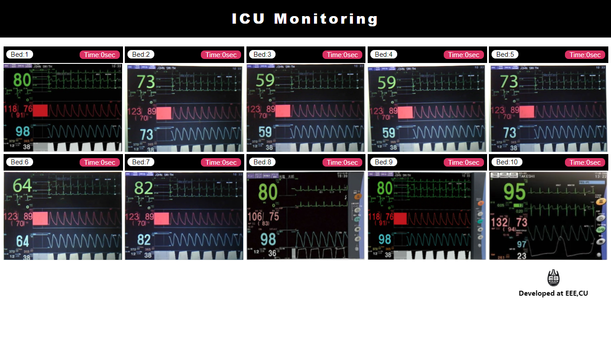

ICU Central Monitoring With ESP-32 CAM
This writing is about developing a central ICU monitoring system where we used individual ESP-32
cams to
take live images of the ICU monitors and then sent them to a central server on a regular
interval (1 sec
or less). These images were being shown real time on a monitor at the doctor/nurses’ room to
display
patient status.
Chittagong General Hospital didn’t have an ICU to start with. With the emergence of
Covid19, a 10 beds
COVID ICU was set up in a couple of weeks. However the ICU monitors (Nihon kohden
BSM-3562) didn’t come
with a central monitoring software and the licensing fee of ~17,000 USD was way over
their budget. This
feature was essential as they were trying to reduce virus exposure of the hospital
personnels who
otherwise had to frequently get inside the ICU to record the patients’ status. Lack of
PPE and other
protective systems only made the situation worse. So when they reached out to us, we
were excited to
look into it. The first obvious way would be to look into the communication protocols
and data packets.
Unfortunately we didn’t have any such monitor at our disposal and it was not possible
for us to go into
the covid ward to work with that. On top of that we weren’t sure what kind of encryption
they were using
and if it would be possible to find a way around within a short time. Instead we decided
to develop a
camera system that we can easily work in the safety of our ”non covid” office space.
Data from all monitors should be available in a central monitor at the
doctor's room.
Same data should be accessed from any mobile phone within the hospital
premises.
Same data should be available to multiple doctors outside the hospital's
premises.
Any indication of network disruption should be obvious so that doctors don’t
misjudge from old
data.
An alarm should be generated whenever any parameter (SpO2 or HR) goes below
a critical number.
This should be easy to install and to adjust by the ICU doctors and nurses.
We didn’t have much experience with standard IP cameras and weren’t sure if we could
satisfy all the
requirements (2,3,4,5,6) with an off the shelf camera system. On top of that, here in
Bangladesh, we
only had a few models available. Fortunately we tinkered around with ESP-32 Cam before
and we knew that
we could fulfill most/all of the requirements with this. The only issue could be the
reliability of such
a system, especially since we didn’t have the chance for an extended time testing.
TL;DR
We’re sharing the detail here for anyone who is trying to replicate or improve upon. We are
working to
better the data extraction process Any help will definitely benefit greatly.
ESP-32 cam nodes
We wanted the doctors and nurses to be able to adjust the camera in case it moved. The back
display in
the TTGO module was very convenient for doing so. The cam node takes images and posts them to
the
server. In the beginning it shows the captured images on the back display for 30 sec to help
camera
positioning in front of the monitor.
Raspberry pi server
We used a raspberry Pi setup as NGINX server. This module stores the images, serves a website
displaying all the images in one page. We’ve added a time parameter to show how long ago the
images were taken. Raspberry pi also sends a screen grab to a remote server using MQTT.

The Pi also runs the image processing codes (straightening, text extraction). We made a simple
android
app to load the URL for convenience.
Antenna Performance
CAD Design
ESP-32 Camera Case:
Wiring:
Codes
ESP-32 cam code
#include "esp_camera.h"
#include "rom/tjpgd.h"
#include "cam.h"
#include "ST7789.h"
#include "Arduino.h"
#include "WiFi.h"
#include "soc/soc.h"
#include "tjpgdec.h"
#include "soc/rtc_cntl_reg.h"
String serverName = "192.168.0.120";
String serverPath = "/upload";
const int serverPort = 5000;
WiFiClient client;
const int timerInterval = 000;
unsigned long previousMillis = 0;
const int timerIntervalDisplay = 10000;
int wifiNumber;
const int timerWeb = 10000; //Reset Timer if Stuck in Connecting
unsigned long pMillis = 0;
long lastTime = 0;
ST7789 tft = ST7789();
char tmpStr[256];
int i = 0;
static uint16_t *preview;
sensor_t *s;
camera_fb_t *fb = NULL;
JPGIODEV dev;
char *work = NULL; // Pointer to the working buffer (must be 4-byte aligned)
void setup()
{
WRITE_PERI_REG(RTC_CNTL_BROWN_OUT_REG, 0);
Serial.begin(115200);
tft.init();
tft.invertDisplay(true);
tft.setSwapBytes(true);
tft.setRotation(0);
tft.fillScreen(TFT_BLACK);
tft.setTextSize(2);
tft.setTextColor(TFT_MAROON);
tft.drawString("Searching Wifi!!", 28, 110);
// Serial.setDebugOutput(true);
WiFi.mode(WIFI_STA);
Serial.println();
Serial.print("Connecting to ");
// Serial.println(ssid);
Serial.println("scan start");
// WiFi.scanNetworks will return the number of networks found
int n = WiFi.scanNetworks();
Serial.println("scan done");
if (n == 0) {
Serial.println("no networks found");
} else {
Serial.print(n);
Serial.println(" networks found");
for (int i = 0; i < n; ++i) {
if (WiFi.SSID(i) == "ssid1" or WiFi.SSID(i) == "ssid2" or WiFi.SSID(i) == "ssid3") {
if (WiFi.SSID(i) == "ssid1") {
Serial.print(WiFi.SSID(i));
wifiNumber = i;
const char* ssid = "ssid1";
const char* password = "*****";
WiFi.begin(ssid, password);
while (WiFi.status() != WL_CONNECTED) {
Serial.print(".");
// Code for restart ESP : Start
unsigned long cMillis = millis();
if (cMillis - pMillis >= 10000) {
ESP.restart();
pMillis = cMillis;
}
// End
delay(500);
}
break;
}
else if (WiFi.SSID(i) == "ssid2") {
Serial.print(WiFi.SSID(i));
wifiNumber = i;
const char* ssid = "ssid2";
const char* password = "*****";
WiFi.begin(ssid, password);
while (WiFi.status() != WL_CONNECTED) {
Serial.print(".");
// Code for restart ESP : Start
unsigned long cMillis = millis();
if (cMillis - pMillis >= 10000) {
ESP.restart();
pMillis = cMillis;
}
// End
delay(500);
}
break;
}
else if (WiFi.SSID(i) == "ssid3") {
Serial.println(WiFi.SSID(i));
wifiNumber = i;
const char* ssid = "ssid3";
const char* password = "*******";
WiFi.begin(ssid, password);
while (WiFi.status() != WL_CONNECTED) {
Serial.print(".");
// Code for restart ESP : Start
unsigned long cMillis = millis();
if (cMillis - pMillis >= 10000) {
ESP.restart();
pMillis = cMillis;
}
delay(500);
}
break;
}
}
}
}
Serial.println();
Serial.print("ESP32-CAM IP Address: ");
Serial.println(WiFi.localIP());
esp_err_t err = cam_init();
if (err != ESP_OK)
{
snprintf(tmpStr, sizeof(tmpStr), "Camera init failed with error 0x%x", err);
tft.drawString(tmpStr, 0, 208);
Serial.println(tmpStr);
delay(1000);
ESP.restart();
}
//drop down frame size for higher initial frame rate
sensor_t * s = esp_camera_sensor_get();
s->set_brightness(s, 2);
s->set_contrast(s, 2);
s->set_saturation(s, 2);
s->set_sharpness(s, 2);
s->set_aec2(s, true);
s->set_denoise(s, true);
s->set_lenc(s, true);
s->set_hmirror(s, true);
s->set_vflip(s, true);
s->set_quality(s, 15);
preview = new uint16_t[200 * 200];
work = (char *)malloc(WORK_BUF_SIZE);
dev.linbuf_idx = 0;
dev.x = 0;
dev.y = 0;
dev.linbuf[0] = (color_t *)heap_caps_malloc(JPG_IMAGE_LINE_BUF_SIZE * 3, MALLOC_CAP_DMA);
dev.linbuf[1] = (color_t *)heap_caps_malloc(JPG_IMAGE_LINE_BUF_SIZE * 3, MALLOC_CAP_DMA);
}
esp_err_t cam_init()
{
camera_config_t config;
config.ledc_channel = LEDC_CHANNEL_0;
config.ledc_timer = LEDC_TIMER_0;
config.pin_d0 = Y2_GPIO_NUM;
config.pin_d1 = Y3_GPIO_NUM;
config.pin_d2 = Y4_GPIO_NUM;
config.pin_d3 = Y5_GPIO_NUM;
config.pin_d4 = Y6_GPIO_NUM;
config.pin_d5 = Y7_GPIO_NUM;
config.pin_d6 = Y8_GPIO_NUM;
config.pin_d7 = Y9_GPIO_NUM;
config.pin_xclk = XCLK_GPIO_NUM;
config.pin_pclk = PCLK_GPIO_NUM;
config.pin_vsync = VSYNC_GPIO_NUM;
config.pin_href = HREF_GPIO_NUM;
config.pin_sscb_sda = SIOD_GPIO_NUM;
config.pin_sscb_scl = SIOC_GPIO_NUM;
config.pin_pwdn = PWDN_GPIO_NUM;
config.pin_reset = RESET_GPIO_NUM;
config.xclk_freq_hz = 20000000;
config.pixel_format = PIXFORMAT_JPEG;
if (psramFound()) {
config.frame_size = FRAMESIZE_UXGA;
config.jpeg_quality = 20; //0-63 lower number means higher quality
config.fb_count = 2;
}
else {
config.frame_size = FRAMESIZE_SXGA;
config.jpeg_quality = 10; //0-63 lower number means higher quality
config.fb_count = 1;
}
// camera init
return esp_camera_init(&config);
sendPhoto();
}
void loop()
{
if (i == 0) // count down
{
unsigned long starttime = millis();
unsigned long endtime = starttime;
while ((endtime - starttime) <= 10000) //here change the time to 30000
{
tft.setTextSize(2);
tft.setTextColor(TFT_DARKCYAN);
tft.drawString("Set The Camera!!", 30, 3);
tft.drawString("Bed No: 8", 30, 23);
Serial.println("Wait 10 second");
fb = esp_camera_fb_get();
if (!fb)
{
Serial.printf("Camera capture failed!");
tft.drawString("Camera capture failed!", 0, 224);
}
else
{
decodeJpegBuff(fb->buf, fb->len, 3);
tft.pushRect(20, 50, 200, 150, preview);
esp_camera_fb_return(fb);
fb = NULL;
}
int loopcount = loopcount + 1;
endtime = millis();
}
i = 1;
}
else {
unsigned long currentMillis = millis();
if (currentMillis - previousMillis >= timerInterval) {
tft.fillScreen(TFT_BLACK);
tft.setTextSize(1);
tft.setTextColor(TFT_GREEN);
tft.drawString(WiFi.SSID(wifiNumber), 190, 10);
tft.setTextSize(2);
// Serial.print(WiFi.RSSI());
if (WiFi.RSSI() < -60) {
tft.setTextColor(TFT_RED);
tft.drawNumber(WiFi.RSSI(), 190, 25);
}
else {
tft.drawNumber(WiFi.RSSI(), 190, 25);
}
tft.setTextSize(2);
tft.setTextColor(TFT_DARKCYAN);
; tft.drawString("Image Sending!!!", 30, 100);
tft.drawString("Bed No: 8", 30, 120);
sendPhoto();
// Serial.println();
previousMillis = currentMillis;
}
}
// Serial.println(i);
// i++;
}
// User defined call-back function to input JPEG data from memory buffer
//-------------------------
static UINT tjd_buf_input(
JDEC *jd, // Decompression object
BYTE *buff, // Pointer to the read buffer (NULL:skip)
UINT nd // Number of bytes to read/skip from input stream
)
{
// Device identifier for the session (5th argument of jd_prepare function)
JPGIODEV *dev = (JPGIODEV *)jd->device;
if (!dev->membuff)
return 0;
if (dev->bufptr >= (dev->bufsize + 2))
return 0; // end of stream
if ((dev->bufptr + nd) > (dev->bufsize + 2))
nd = (dev->bufsize + 2) - dev->bufptr;
if (buff)
{ // Read nd bytes from the input strem
memcpy(buff, dev->membuff + dev->bufptr, nd);
dev->bufptr += nd;
return nd; // Returns number of bytes read
}
else
{ // Remove nd bytes from the input stream
dev->bufptr += nd;
return nd;
}
}
// User defined call-back function to output RGB bitmap to display device
//----------------------
static UINT tjd_output(
JDEC *jd, // Decompression object of current session
void *bitmap, // Bitmap data to be output
JRECT *rect // Rectangular region to output
)
{
BYTE *src = (BYTE *)bitmap;
// Serial.printf("%d, %d, %d, %d\n", rect->top, rect->left, rect->bottom, rect->right);
for (int y = rect->top; y <= rect->bottom; y++)
{
for (int x = rect->left; x <= rect->right; x++)
{
preview[y * 200 + x] = tft.color565(*(src++), *(src++), *(src++));
}
}
return 1; // Continue to decompression
}
void decodeJpegBuff(uint8_t arrayname[], uint32_t array_size, uint8_t scale)
{
JDEC jd; // Decompression object (70 bytes)
JRESULT rc;
//dev.fhndl = NULL;
// image from buffer
dev.membuff = arrayname;
dev.bufsize = array_size;
dev.bufptr = 0;
if (scale > 3)
scale = 3;
if (work)
{
rc = jd_prepare(&jd, tjd_buf_input, (void *)work, WORK_BUF_SIZE, &dev);
if (rc == JDR_OK)
{
// Start to decode the JPEG file
rc = jd_decomp(&jd, tjd_output, scale);
}
}
}
//
String sendPhoto() {
delay(1000);
String getAll;
String getBody;
camera_fb_t * fb = NULL;
fb = esp_camera_fb_get();
if (!fb) {
Serial.println("Camera capture failed");
delay(1000);
ESP.restart();
}
// Serial.println("Connecting to server: " + serverName);
if (client.connect(serverName.c_str(), serverPort))
client.setNoDelay(true);
String head = "--RandomNerdTutorials\r\nContent-Disposition: form-data; name=\"image[]\"; filename=\"res7.jpg\"\r\nContent-Type: image/jpeg\r\n\r\n";
String tail = "\r\n--RandomNerdTutorials--\r\n";
uint32_t imageLen = fb->len;
uint32_t extraLen = head.length() + tail.length();
uint32_t totalLen = imageLen + extraLen;
uint32_t t = millis();
client.println("POST " + serverPath + " HTTP/1.1");
client.println("Host: " + serverName);
client.println("Content-Length: " + String(totalLen));
client.println("Content-Type: multipart/form-data; boundary=RandomNerdTutorials");
client.println();
client.print(head);
long sTimer = millis();
// Serial.print(sTimer); Serial.println(" ms");
uint8_t *fbBuf = fb->buf;
size_t fbLen = fb->len;
// Serial.println(fbLen);
for (size_t n = 0; n < fbLen; n = n + 1024) {
if (n + 1024 < fbLen) {
client.write(fbBuf, 1024);
fbBuf += 1024;
}
else if (fbLen % 1024 > 0) {
size_t remainder = fbLen % 1024;
client.write(fbBuf, remainder);
}
// Serial.print(millis()); Serial.println(" ms");
if ((millis() - sTimer) >= 6000) {
Serial.print("ESP.getFreeHeap()");
Serial.println(ESP.getFreeHeap());
break;
}
}
client.print(tail);
t = millis() - t;
Serial.println(WiFi.RSSI());
Serial.print(t); Serial.println(" ms");
esp_camera_fb_return(fb);
int timoutTimer = 5000;
long startTimer = millis();
boolean state = false;
Serial.println(startTimer);
while ((startTimer + timoutTimer) > millis()) {
Serial.print(".");
delay(100);
while (client.available()) {
// client.getNoDelay();
char c = client.read();
Serial.print(c);
// Serial.println(' ');
if (c == '\n') {
if (getAll.length() == 0) {
state = true;
}
getAll = "";
}
else if (c != '\r') {
getAll += String(c);
}
if (state == true) {
getBody += String(c);
}
startTimer = millis();
}
if (getBody.length() > 0) {
break;
}
}
// Serial.println();
client.stop();
// Serial.println(getBody);
}
else {
getBody = "Connection to " + serverName + " failed.";
Serial.println(getBody);
}
return getBody;
}
Raspberry pi server
'''
Server code
'''
from flask import Flask, redirect, request, render_template, jsonify
from werkzeug.utils import secure_filename
import os
import glob
import shutil
import time
from datetime import datetime
from flask_sqlalchemy import SQLAlchemy
from demo import imageFunc
import schedule
import threading
from threading import Timer
from threading import Thread, Event
from flask_socketio import SocketIO, emit, send
from fixAngle import imageFuncAngle
import eventlet
from flask_mqtt import Mqtt
from celery import Celery
import sqlit
app = Flask(__name__)
app.config['SQLALCHEMY_TRACK_MODIFICATIONS'] = False
app.config['SQLALCHEMY_DATABASE_URI'] = 'sqlite:///posts.db'
app.config['SECRET_KEY'] = 'secret!'
app.config['threaded'] = Tr
socketio = SocketIO(app, engineio_logger=True, threaded=True, logger=Tru
thread = Thread
db = SQLAlchemy(ap
# control = Fal
class MonitorData(db.Model):
id = db.Column(db.Integer, primary_key=True, autoincrement=True)
monitor_name = db.Column(db.String, nullable=True)
heart_rate = db.Column(db.String, nullable=False)
oxygen_saturation = db.Column(db.String, nullable=True)
date_posted = db.Column(db.DateTime, nullable=False, default=datetime.utcno
def __repr__(self):
return 'Monitor Data' + str(self.i
def dataRead():
try:
while True:
print("my work started")
start = time.time()
src_dir = "static/imagesFixAngle"
dst_dir = "static/imagesForData"
for f in glob.iglob(os.path.join(src_dir, "*.jpg")):
shutil.copy(f, dst=dst_dir)
image = os.listdir('static/imagesForData')
image = ['imagesForData/' + file for file in image]
import subprocess
import ast
process = subprocess.Popen(["python", "C:\Its mine\Workspace\Flask\Demo2\demo.py"], stdout=subprocess.PIPE)
stdout, err = process.communicate()
Data = ast.literal_eval(stdout)
i = 0
try:
for singleImage in image:
name = singleImage.split('/')[1]
new_post = MonitorData(monitor_name=name, heart_rate=Data[i][0], oxygen_saturation=Data[i][1])
db.session.add(new_post)
db.session.commit()
i += 1
except:
print ("Data cant read")
print(Data) # 30 sec for raspberry pi
end = time.time()
print(end - start)
time.sleep(5)
if num == 0:
break
except:
print('error')
@app.route('/')
def hello_world():
return "Welcome To ICU Image Monitoring system"
@app.route('/upload', methods=['POST', 'GET'])
def upload():
pic = request.files.getlist("image[]")
for f in pic:
print(f)
filename = secure_filename(f.filename)
path = 'static/images'
imagePath = os.path.join(path, filename)
print(imagePath)
# imageFuncAngle(imagePath,filename)
f.save(imagePath)
fixPath = 'static/imagesFixAngle'
imageFixPath = os.path.join(fixPath, filename)
imageFuncAngle(imageFixPath, imagePath)
if not pic:
return 'No pic uploaded!!', 400
return render_template('posted.html')
@app.route('/image', methods=['GET'])
def getImage():
mydir = 'static/imagesForData/'
filelist = [f for f in os.listdir(mydir) if f.endswith(".jpg")]
if filelist is not None:
for f in filelist:
os.remove(os.path.join(mydir, f))
image = os.listdir('static/imagesFixAngle')
image = ['imagesFixAngle/' + file for file in image]
# t1 =threading.Thread(target=test_connect)
# t2= threading.Thread(target=upload)
# t3 = threading.Thread(target=dataRead)
# t3.start()
return render_template('dashboard.html', image=imag
@app.route('/heartRate')
def heartRateChart():
return render_template('heartRate.html ')'
@app.route('/oxygenSaturation')
def oxygenSaturationChart():
return render_template('oxygenSaturation.html
@app.route('/chartData',methods=['GET'])
def chartData():
conn = sqlite3.connect('posts.db')
c = conn.cursor()
# data =c.execute('SELECT * FROM (SELECT * FROM monitor_data ORDER BY date_posted DESC LIMIT 100) ORDER BY date_posted ASC ').fetchall()
bed1 = c.execute(
'SELECT * FROM (SELECT * FROM monitor_data WHERE monitor_name LIKE "%res0%" ORDER BY date_posted DESC LIMIT 100) ORDER BY date_posted ASC ').fetchall()
bed2 = c.execute(
'SELECT * FROM (SELECT * FROM monitor_data WHERE monitor_name LIKE "%res1%" ORDER BY date_posted DESC LIMIT 100) ORDER BY date_posted ASC ').fetchall()
bed3 = c.execute(
'SELECT * FROM (SELECT * FROM monitor_data WHERE monitor_name LIKE "%res2%" ORDER BY date_posted DESC LIMIT 100) ORDER BY date_posted ASC ').fetchall()
bed4 = c.execute(
'SELECT * FROM (SELECT * FROM monitor_data WHERE monitor_name LIKE "%res3%" ORDER BY date_posted DESC LIMIT 100) ORDER BY date_posted ASC ').fetchall()
bed5 = c.execute(
'SELECT * FROM (SELECT * FROM monitor_data WHERE monitor_name LIKE "%res4%" ORDER BY date_posted DESC LIMIT 100) ORDER BY date_posted ASC ').fetchall()
bed6 = c.execute(
'SELECT * FROM (SELECT * FROM monitor_data WHERE monitor_name LIKE "%res5%" ORDER BY date_posted DESC LIMIT 100) ORDER BY date_posted ASC ').fetchall()
bed7 = c.execute(
'SELECT * FROM (SELECT * FROM monitor_data WHERE monitor_name LIKE "%res6%" ORDER BY date_posted DESC LIMIT 100) ORDER BY date_posted ASC ').fetchall()
bed8 = c.execute(
'SELECT * FROM (SELECT * FROM monitor_data WHERE monitor_name LIKE "%res7%" ORDER BY date_posted DESC LIMIT 100) ORDER BY date_posted ASC ').fetchall()
bed9 = c.execute(
'SELECT * FROM (SELECT * FROM monitor_data WHERE monitor_name LIKE "%res8%" ORDER BY date_posted DESC LIMIT 100) ORDER BY date_posted ASC ').fetchall()
bed10 = c.execute(
'SELECT * FROM (SELECT * FROM monitor_data WHERE monitor_name LIKE "%res9%" ORDER BY date_posted DESC LIMIT 100) ORDER BY date_posted ASC ').fetchall()
# data1= c.execute('SELECT * FROM (SELECT * FROM monitor_data ORDER BY date_posted DESC LIMIT 100) ORDER BY date_posted ASC ').fetchall()
# print data
# heart_rate= []
# label=[]
bed1HeartRate = []
bed1DatePosted = []
bed1OxygenSaturation = []
for row in bed1:
bed1HeartRate.append(row[2])
bed1OxygenSaturation.append(row[3])
bed1DatePosted.append(row[4
bed2HeartRate = []
bed2DatePosted = []
bed2OxygenSaturation = []
for row in bed2:
bed2HeartRate.append(row[2])
bed2OxygenSaturation.append(row[3])
bed2DatePosted.append(row[4
bed3HeartRate = []
bed3DatePosted = []
bed3OxygenSaturation = []
for row in bed3:
bed3HeartRate.append(row[2])
bed3OxygenSaturation.append(row[3])
bed3DatePosted.append(row[4
bed4HeartRate = []
bed4DatePosted = []
bed4OxygenSaturation = []
for row in bed4:
bed4HeartRate.append(row[2])
bed4OxygenSaturation.append(row[3])
bed4DatePosted.append(row[4
bed5HeartRate = []
bed5DatePosted = []
bed5OxygenSaturation = []
for row in bed5:
bed5HeartRate.append(row[2])
bed5OxygenSaturation.append(row[3])
bed5DatePosted.append(row[4
bed6HeartRate = []
bed6DatePosted = []
bed6OxygenSaturation = []
for row in bed6:
bed6HeartRate.append(row[2])
bed6OxygenSaturation.append(row[3])
bed6DatePosted.append(row[4
bed7HeartRate = []
bed7DatePosted = []
bed7OxygenSaturation = []
for row in bed7:
bed7HeartRate.append(row[2])
bed7OxygenSaturation.append(row[3])
bed7DatePosted.append(row[4
bed8HeartRate = []
bed8DatePosted = []
bed8OxygenSaturation = []
for row in bed8:
bed8HeartRate.append(row[2])
bed8OxygenSaturation.append(row[3])
bed8DatePosted.append(row[4
bed9HeartRate = []
bed9DatePosted = []
bed9OxygenSaturation = []
for row in bed9:
bed9HeartRate.append(row[2])
bed9OxygenSaturation.append(row[3])
bed9DatePosted.append(row[4
bed10HeartRate = []
bed10DatePosted = []
bed10OxygenSaturation = []
for row in bed10:
bed10HeartRate.append(row[2])
bed10OxygenSaturation.append(row[3])
bed10DatePosted.append(row[4
Data = [(bed1HeartRate, bed1OxygenSaturation, bed1DatePosted),
(bed2HeartRate, bed2OxygenSaturation, bed2DatePosted),
(bed3HeartRate, bed3OxygenSaturation, bed3DatePosted),
(bed4HeartRate, bed4OxygenSaturation, bed4DatePosted),
(bed5HeartRate, bed5OxygenSaturation, bed5DatePosted),
(bed6HeartRate, bed6OxygenSaturation, bed6DatePosted),
(bed7HeartRate, bed7OxygenSaturation, bed7DatePosted),
(bed8HeartRate, bed8OxygenSaturation, bed8DatePosted),
(bed9HeartRate, bed9OxygenSaturation, bed9DatePosted),
(bed10HeartRate, bed10OxygenSaturation, bed10DatePosted
return jsonify({'data': Data})
# return render_template('heartRate.html',heart_rate=heart_rate,label=label)
@app.route('/greetings',methods=['GET'])
def greet():
return jsonify({'greetings':'Its me hedayet'
def provideDataFromDatabase():
while True:
# result = MonitorData.query.order_by(MonitorData.date_posted.desc()).limit(10).all()
img1 = MonitorData.query.filter(db.or_(MonitorData.monitor_name == 'res0.jpg')).order_by(
MonitorData.id.desc()).first()
img2 = MonitorData.query.filter(db.or_(MonitorData.monitor_name == 'res1.jpg')).order_by(
MonitorData.id.desc()).first()
img3 = MonitorData.query.filter(db.or_(MonitorData.monitor_name == 'res2.jpg')).order_by(
MonitorData.id.desc()).first()
img4 = MonitorData.query.filter(db.or_(MonitorData.monitor_name == 'res3.jpg')).order_by(
MonitorData.id.desc()).first()
img5 = MonitorData.query.filter(db.or_(MonitorData.monitor_name == 'res4.jpg')).order_by(
MonitorData.id.desc()).first()
img6 = MonitorData.query.filter(db.or_(MonitorData.monitor_name == 'res5.jpg')).order_by(
MonitorData.id.desc()).first()
img7 = MonitorData.query.filter(db.or_(MonitorData.monitor_name == 'res6.jpg')).order_by(
MonitorData.id.desc()).first()
img8 = MonitorData.query.filter(db.or_(MonitorData.monitor_name == 'res7.jpg')).order_by(
MonitorData.id.desc()).first()
img9 = MonitorData.query.filter(db.or_(MonitorData.monitor_name == 'res8.jpg')).order_by(
MonitorData.id.desc()).first()
img10 = MonitorData.query.filter(db.or_(MonitorData.monitor_name == 'res9.jpg')).order_by(
MonitorData.id.desc()).first()
Data = []
Data.append((img1.heart_rate, img1.oxygen_saturation))
Data.append((img2.heart_rate, img2.oxygen_saturation))
Data.append((img3.heart_rate, img3.oxygen_saturation))
Data.append((img4.heart_rate, img4.oxygen_saturation))
Data.append((img5.heart_rate, img5.oxygen_saturation))
Data.append((img6.heart_rate, img6.oxygen_saturation))
Data.append((img7.heart_rate, img7.oxygen_saturation))
Data.append((img8.heart_rate, img8.oxygen_saturation))
Data.append((img9.heart_rate, img9.oxygen_saturation))
Data.append((img10.heart_rate, img10.oxygen_saturation))
# for i in result:
# Data.append(((i.heart_rate), (i.oxygen_saturation)))
# Data.reverse()
socketio.emit('from flask', {'flask': Data}, namespace='/test')
socketio.sleep(
def timeContent():
while True:
mainTime = time.time()
img1time = int(mainTime-os.path.getmtime("C:\Its mine\Workspace\Flask\Demo2\static\imagesFixAngle/res0.jpg"))
img2time = int(mainTime-os.path.getmtime("C:\Its mine\Workspace\Flask\Demo2\static\imagesFixAngle/res1.jpg"))
img3time = int(mainTime-os.path.getmtime("C:\Its mine\Workspace\Flask\Demo2\static\imagesFixAngle/res2.jpg"))
img4time = int(mainTime-os.path.getmtime("C:\Its mine\Workspace\Flask\Demo2\static\imagesFixAngle/res3.jpg"))
img5time = int(mainTime-os.path.getmtime("C:\Its mine\Workspace\Flask\Demo2\static\imagesFixAngle/res4.jpg"))
img6time = int(mainTime-os.path.getmtime("C:\Its mine\Workspace\Flask\Demo2\static\imagesFixAngle/res5.jpg"))
img7time = int(mainTime-os.path.getmtime("C:\Its mine\Workspace\Flask\Demo2\static\imagesFixAngle/res6.jpg"))
img8time = int(mainTime-os.path.getmtime("C:\Its mine\Workspace\Flask\Demo2\static\imagesFixAngle/res7.jpg"))
img9time = int(mainTime-os.path.getmtime("C:\Its mine\Workspace\Flask\Demo2\static\imagesFixAngle/res8.jpg"))
img10time = int(mainTime-os.path.getmtime("C:\Its mine\Workspace\Flask\Demo2\static\imagesFixAngle/res9.jpg"))
timeData=[img1time,img2time,img3time,img4time,img5time,img6time,img7time,img8time,img9time,img10time]
print(timeData)
socketio.emit('from time',{'counting': timeData},namespace='/time')
socketio.sleep(
@socketio.on('connect', namespace='/test')
def test_connect():
global thread, num
print('Client connected')
num = 1
if not thread.isAlive():
print("Starting Thread")
thread = socketio.start_background_task(provideDataFromDatabas
@socketio.on('connect', namespace='/time')
def time_connect():
print("time connected")
global thread
if not thread.isAlive():
thread = socketio.start_background_task(timeConten
@socketio.on('disconnect',namespace='/time')
def time_disconnect():
print("time client disconnected
# @socketio.on('disconnect', namespace='/test')
# def test_disconnect():
# # print('Client disconnected')
# # global num
# # num = 0
# print("Thread Stop because of disconnect client
if __name__ == '__main__':
# t3 = threading.Thread(target=dataRead)
# t3.start()
# if not control:
# print("main running")
# control = True
# app.run(debug=False)
# db.create_all()
# t3 = threading.Thread(target=dataRead)
# t3.start()
socketio.run(app) #off debug for single threading dataRead. If use debug dataRead threading will run twice
Image processing
import cv2 as cv
import cv2
import numpy as np
import pytesseract
pytesseract.pytesseract.tesseract_cmd = r"C:\Program Files\Tesseract-OCR\tesseract.exe"
image = cv.imread('../img.jpg')
############## Angled #################
def biggestContour(contours):
biggest = np.array([])
max_area = 0
for i in contours:
area = cv2.contourArea(i)
if area > 100000:
peri = cv2.arcLength(i, True)
approx = cv2.approxPolyDP(i, 0.02 * peri, True)
if area > max_area and len(approx) == 4:
biggest = approx
max_area = area
return biggest, max_area
def drawRectangle(img, biggest, thickness):
cv2.line(img, (biggest[0][0][0], biggest[0][0][1]), (biggest[1][0][0], biggest[1][0][1]), (0, 255, 0), thickness)
cv2.line(img, (biggest[0][0][0], biggest[0][0][1]), (biggest[2][0][0], biggest[2][0][1]), (0, 255, 0), thickness)
cv2.line(img, (biggest[3][0][0], biggest[3][0][1]), (biggest[2][0][0], biggest[2][0][1]), (0, 255, 0), thickness)
cv2.line(img, (biggest[3][0][0], biggest[3][0][1]), (biggest[1][0][0], biggest[1][0][1]), (0, 255, 0), thickness)
return img
def reorder(myPoints):
myPoints = myPoints.reshape((4, 2))
myPointsNew = np.zeros((4, 1, 2), dtype=np.int32)
add = myPoints.sum(1)
myPointsNew[0] = myPoints[np.argmin(add)]
myPointsNew[3] = myPoints[np.argmax(add)]
diff = np.diff(myPoints, axis=1)
myPointsNew[1] = myPoints[np.argmin(diff)]
myPointsNew[2] = myPoints[np.argmax(diff)]
return myPointsNew
count = 0
widthImg = 800
heightImg = 600
img = cv2.resize(image, (widthImg, heightImg))
imgGray = cv2.cvtColor(img, cv2.COLOR_BGR2GRAY)
cv.imwrite("grey.jpg",imgGray)
imgBlur = cv2.GaussianBlur(imgGray, (5, 5), 1)
cv.imwrite('blur.jpg',imgBlur)
imgThreshold = cv2.Canny(imgBlur, 100, 100)
cv.imwrite('canny.jpg',imgThreshold)
kernel = np.ones((5, 5))
imgDial = cv2.dilate(imgThreshold, kernel, iterations=2)
cv.imwrite('dilate.jpg',imgBlur)
imgThreshold = cv2.erode(imgDial, kernel, iterations=1)
imgContours = img.copy()
imgBigContour = img.copy()
contours, hierarchy = cv2.findContours(imgThreshold, cv2.RETR_EXTERNAL, cv2.CHAIN_APPROX_SIMPLE)
cv2.drawContours(imgContours, contours, -1, (0, 255, 0), 10)
biggest, maxArea = biggestContour(contours)
if biggest.size != 0:
biggest = reorder(biggest)
cv2.drawContours(imgBigContour, biggest, -1, (0, 255, 0), 20)
imgBigContour = drawRectangle(imgBigContour, biggest, 2)
pts1 = np.float32(biggest)
pts2 = np.float32([[0, 0], [widthImg, 0], [0, heightImg], [widthImg, heightImg]])
matrix = cv2.getPerspectiveTransform(pts1, pts2)
image = imgWarpColored = cv2.warpPerspective(img, matrix, (widthImg, heightImg))
imgWarpColored = imgWarpColored[0:imgWarpColored.shape[0], 0:imgWarpColored.shape[1]]
img2 = imgWarpColored = cv2.resize(imgWarpColored, (widthImg, heightImg))
hsv = cv.cvtColor(image, cv.COLOR_BGR2HSV)
############## GREEN ##############
lower_green = np.array([30, 50, 150])
upper_green = np.array([75, 255, 255])
mask_green = cv.inRange(hsv, lower_green, upper_green)
result_green = cv.bitwise_and(image, image, mask=mask_green)
grey = cv.cvtColor(result_green, cv.COLOR_BGR2GRAY)
ret, threshold_green = cv.threshold(grey, 1, 255, cv.THRESH_BINARY_INV)
contours, hierarchy = cv.findContours(threshold_green, cv.RETR_LIST, cv.CHAIN_APPROX_SIMPLE)
for cnt in contours:
if cv.contourArea(cnt) <= 200:
cv.drawContours(threshold_green, [cnt], -1, 255, -1)
g_color = threshold_green
############## BLUE ##############
lower_blue = np.array([75, 30, 180])
upper_blue = np.array([100, 255, 255])
mask_blue = cv.inRange(hsv, lower_blue, upper_blue)
result_blue = cv.bitwise_and(image, image, mask=mask_blue)
grey = cv.cvtColor(result_blue, cv.COLOR_BGR2GRAY)
ret, threshold_blue = cv.threshold(grey, 1, 255, cv.THRESH_BINARY_INV)
contours1, hierarchy1 = cv.findContours(threshold_blue, cv.RETR_LIST, cv.CHAIN_APPROX_SIMPLE)
for cnt in contours1:
if cv.contourArea(cnt) <= 300:
cv.drawContours(threshold_blue, [cnt], -1, 255, -1)
kernel = np.ones((5, 5), np.uint8)
opening = cv2.morphologyEx(threshold_blue, cv2.MORPH_OPEN, kernel)
erosion = cv.dilate(opening, cv2.getStructuringElement(cv2.MORPH_ELLIPSE, (3, 3)), 3)
b_color = erosion
res = cv2.bitwise_and(g_color, g_color, mask=b_color)
text = pytesseract.image_to_string(res, config='--oem 3 --psm 11 outputbase digits').split()
if len(text)>=2:
finalText = []
for i in range(len(text)):
if text[i].isdigit() == True:
finalText.append(text[i])
print('Heart Rate = '+finalText[0])
print('Oxygen Saturation = '+ finalText[1])
else:
print("Image isn't clear")
cv.waitKey(0)
Android Application
import 'package:flutter/material.dart';
import 'package:url_launcher/url_launcher.dart';
class MyHomePage extends StatefulWidget {
@override
_MyHomePageState createState() => _MyHomePageState();
}
class _MyHomePageState extends State {
String greetings = '';
@override
Widget build(BuildContext context) {
return Scaffold(
body: Container(
child: Center(
child: Column(
mainAxisAlignment: MainAxisAlignment.center,
children: [
RaisedButton(
onPressed: _launchDashboardURL,
child: Text(
'Dashboard',
style: TextStyle(color: Colors.white),
),
color: Colors.pinkAccent,
),
RaisedButton(
onPressed: _launchHeartURL,
child: Text(
'Heart Rate',
style: TextStyle(color: Colors.white),
),
color: Colors.greenAccent,
),
RaisedButton(
onPressed: _launchOxygenURL,
child: Text(
'Oxygen Saturation',
style: TextStyle(color: Colors.white),
),
color: Colors.teal,
),
],
),
),
),
);
}
_launchDashboardURL() async {
const url = "**************";
if (await canLaunch(url)) {
await launch(
url,
forceWebView: true,
forceSafariVC: true,
enableJavaScript: true,
);
} else {
throw 'Could not launch $url';
}
}
_launchHeartURL() async {
const url = '****************';
if (await canLaunch(url)) {
await launch(url,
forceWebView: true, forceSafariVC: true, enableJavaScript: true);
} else {
// throw 'Could not launch $url';
Text(' Server not respond');
}
}
_launchOxygenURL() async {
const url = '*******';
if (await canLaunch(url)) {
await launch(url, forceWebView: true, enableJavaScript: true);
} else {
throw 'Could not launch $url';
}
}
}
Remote Access
##############
# SUBSCRIBER #
##############
import paho.mqtt.client as mqtt
import time
MQTT_SERVER = "*********"
MQTT_PATH = "******"
def on_connect(client, userdata, flags, rc):
print("Connected with result code "+str(rc))
client.subscribe(MQTT_PATH)
def on_message(client, userdata, msg):
start = time.time()
f = open('output.jpg', "wb")
f.write(msg.payload)
end = time.time()
res= end -start
print("Image Received:",res)
f.close()
client = mqtt.Client()
client.on_connect = on_connect
client.on_message = on_message
client.connect(MQTT_SERVER, 1883, 60)
end = time.time()
# print(end-start)
client.loop_forever()
#############
# PUBLISHER #
#############
import paho.mqtt.publish as publish
import time
# start = time.time()
MQTT_SERVER = "*****" #Write Server IP Address
MQTT_PATH = "*****"
x=0
while True:
start = time.time()
f=open("img/res0.jpg", "rb")
fileContent = f.read()
byteArr = bytearray(fileContent)
publish.single(MQTT_PATH, byteArr, hostname=MQTT_SERVER)
end =time.time()
print(end-start)
x+=1